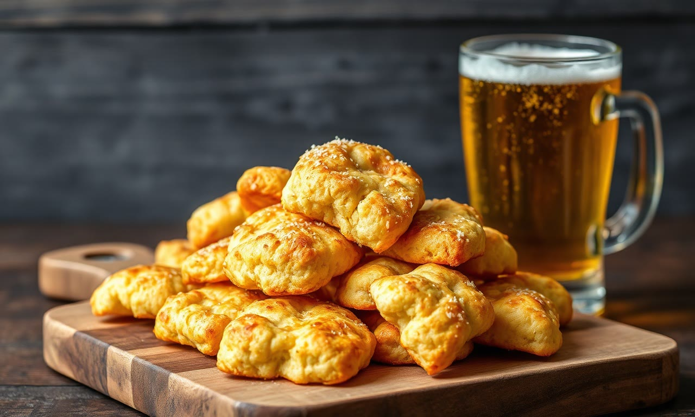

Doces · Biscoitos
Biscoitinhos de cerveja

Ingredientes
- 2 3/4 xícaras de farinha de trigo
- 1 xícara de manteiga sem sal em temperatura ambiente
- 2 colheres (sopa) de cerveja
- 1 xícara de açúcar cristal
Modo de preparo
- Pré-aqueça o forno a 180 °C. Misture farinha e manteiga com as mãos.
- Junte cerveja e amasse até enrolar.
- Faça bolinhas de 1,5 cm; passe no açúcar cristal.
- Coloque em assadeira sem untar; asse 30 min. Esfrie e congele.
Observação
Achate as bolinhas para bolachinhas. Congelamento: saco sem ar.